Computerhardware
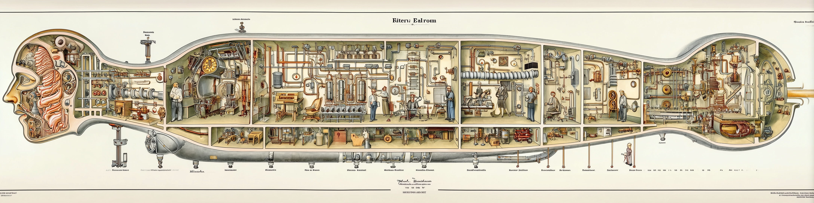
Never trust a computer you can’t throw out a window.
— Steve Wozniak
Definition: Computer
Computer kommen heutzutage fast überall vor. Sie sind definiert als:
Computer
Ein Computer ist ein Gerät, das mittels programmierbarer Rechenvorschriften Daten verarbeitet
Es gibt drei grundlegende Arten von Computern, die auf unterschiedliche Anwendungen spezialisiert sind. Dennoch basieren alle auf demselben Hardwareaufbau.
Hochleistungsrechner
- Supercomputer – Spezielle Computer mit sehr vielen CPUs und GPUs zur hochparallelen Verarbeitung komplexer Probleme (z.B. Wettersimulation)
- Mainframe – Spezielle Großrechner mit sehr hoher Zuverlässigkeit z.B. in Banken
- Server – Computer in Rechenzentren ohne Bildschirm für das Internet oder Cloud-Computing
Personal- und Mobilgeräte
- Personal Computer (PC) – Desktop-Computer in Büros oder zu Hause für Arbeit und Freizeit
- Laptops – Mobile Computer für das Arbeiten, Spielen und Studieren unterwegs
- Smartphones – Mobiler Rechner mit Touchscreen und wenig Telefonfunktion
- Tablets – Mobiler Computer mit viel Touchscreen und ohne Telefonfunktion
Eingebettete Systeme
- Eingebettete Computer – kleine Rechner in Autos, Robotern und Smart-Homes
Computer Aufbau
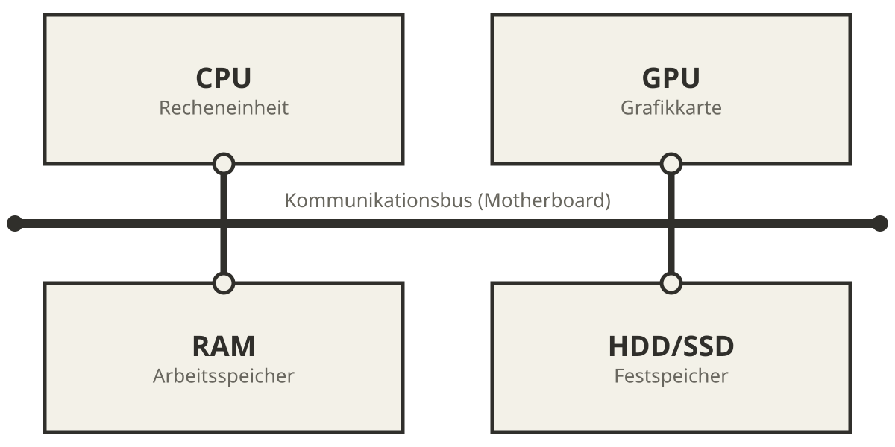
Die Kernmodule eines Computers sind:
- die CPU (Central Processing Unit) als zentrale Recheneinheit,
- die GPU (Graphics Processing Unit) für graphische Anwendungen,
- der RAM (Random Access Memory) als Arbeitsspeicher und
- eine Festplatte (HDD) oder ein Solid State Drive (SSD) als dauerhafter Speicher.
- das Mainboard mit dem Kommunikationsbus welches alle Teile verbindet.
Computer Aufbau – Speicherdauer
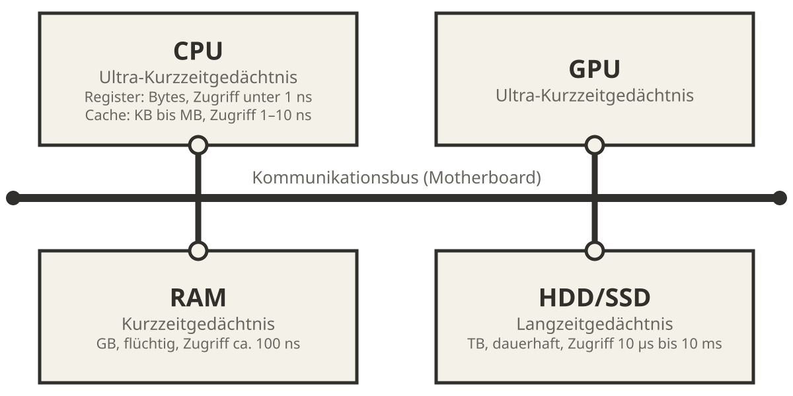
Der Computer hat ähnliche Gedächtnisarten wie der Mensch:
- CPU und GPU haben kleine Register und Cache Speicher (Ultra-Kurzzeitgedächtnis)
- Der RAM ist ein volatiler Speicher, d.h. der Inhalt geht beim Ausschalten verloren (Kurzzeitgedächtnis)
- Die HDD/SSD ist ein permanenter Speicher, d.h. der Inhalt bleibt erhalten (Langzeitgedächtnis)
Speicherhierarchie
Die Speicherarten unterscheiden sich in Zugriffszeit und Kapazität um viele Größenordnungen: Register der CPU antworten in unter einer Nanosekunde, bieten aber nur wenige Bytes. Der Cache fasst Kilo- bis Megabytes, der RAM Gigabytes bei etwa 100 ns Zugriffszeit, SSD und HDD speichern Terabytes, brauchen aber Mikro- bis Millisekunden. Je näher ein Speicher am Prozessor liegt, desto schneller, kleiner und teurer ist er. Das erklärt Leistungsunterschiede zwischen Programmen: Wer Daten wiederholt aus dem Cache liest, rechnet deutlich schneller als jemand, der sie immer wieder von der Festplatte lädt. Die Werte sind Größenordnungen und hängen von der Hardware ab.
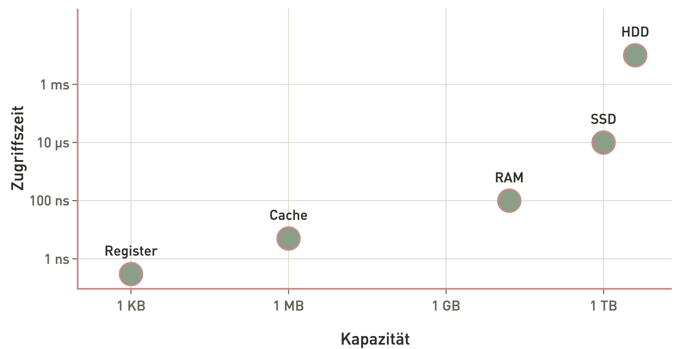
Zentrale Verarbeitungseinheit CPU
Die CPU (Central Processing Unit) ist die Recheneinheit des Computers und zuständig für die Ausführung von Anwendungen sowie für Berechnungen und Operationen. Sie bearbeitet eine Sequenz an Befehlen in Form eines Computerprogramms. Moderne CPUs bestehen aus mehreren Rechenkernen (4–24 im Desktop-Bereich, bis zu 128+ in Server- und Workstation-Systemen) mit sehr hoher Leistungsfähigkeit um komplexe Berechnungen sehr schnell auszuführen. Eine CPU besteht aus Milliarden an Transistoren die nur wenige Nanometer (1000000nm=1cm) groß sind. Transistoren kombinieren sich zu Logikgattern (z.B. NAND, NOR, XOR), die wiederum die arithmetisch-logische Einheit (ALU) der CPU bilden.
Grafikkarte GPU
Die Grafikkarte GPU (Graphic Processing Unit) ist verantwortlich für die Verarbeitung von Grafiken (2D, 3D und Videos) und parallelen Berechnungen. In einigen Computern ist die GPU in die CPU integriert, während Gaming-Computer und Workstations oft separate, leistungsstarke Grafikkarten verwenden. Moderne GPUs bestehen aus tausenden sehr einfachen Recheneinheiten, die nur wenig Rechenleistung und Speicher haben, aber durch die Anzahl sehr viele parallele Berechnungen ausführen können im Gegensatz zur CPU.
Arbeitsspeicher RAM
Der RAM (Random Access Memory) ist der temporäre Speicher, in dem Daten und Programme während des Betriebs geladen werden. Ein größerer RAM ermöglicht schnellere Leistung und Multitasking-Fähigkeiten.
Festspeicher HDD/SSD
HDD und SSD (Hard Disk Drive / Solid State Drive) sind die dauerhaften Speicher des Computers, auf dem das Betriebssystem, Programme und Daten gespeichert werden. HDDs (Festplattenlaufwerke) speichern Daten auf rotierenden Scheiben, während SSDs (Solid-State-Laufwerke) Flash-Speicher verwenden und in der Regel schneller sind.
Mainboard mit dem Kommunikationsbus
Das Mainboard ist die Hauptplatine des Computers, auf der CPU, RAM, GPU und andere Komponenten angeschlossen sind. Die Komponenten tauschen Informationen über ein Kommunikationsbus aus.
Binäre Zahlen
Computer speichern, verarbeiten und übertragen Daten in Form von binären Zahlen. Dies liegt daran, dass Transistoren in der CPU nur zwei Zustände unterscheiden können und somit ausschließlich logische Operationen ausführen. Das Wort „binär“ stammt vom lateinischen „binarius“ und bedeutet „zweifach” oder „doppelt”. Das binäre System ist das kleinste sinnvolle Zahlensystem und verwendet nur zwei verschiedene Zeichen: 0 und 1. Diese beiden Werte können auf unterschiedliche Weise interpretiert werden, zum Beispiel als „aus” und „an”, „falsch” und „wahr” oder einfach als die Zahlen 0 und 1. Durch die Kombination vieler solcher binärer Stellen (Bits) lassen sich komplexe Daten und Informationen im Computer darstellen und verarbeiten.
Die SI-Einheiten KB, MB, GB sind auf Basis 1000 definiert. Betriebssysteme zeigen Dateigrößen jedoch traditionell auf Basis 1024 an — oft noch unter den alten Namen. Seit 1998 legen IEC-Präfixe (KiB = 1.024 B, MiB = 1.048.576 B, GiB = 1.073.741.824 B) diese 1024er-Stufen eindeutig fest.
| Einheit | Abkürzung | Dezimal Wert | Binär (IEC) | Abkürzung | Binär (Bytes) |
|---|---|---|---|---|---|
| Kilobyte | kB | 1.000 | Kibibyte | KiB | 1.024 |
| Megabyte | MB | 1.000.000 | Mebibyte | MiB | 1.048.576 |
| Gigabyte | GB | 1.000\(^3\) | Gibibyte | GiB | 1.024\(^3\) |
| Terabyte | TB | 1.000\(^4\) | Tebibyte | TiB | 1.024\(^4\) |
Darstellung von ganzen Zahlen im Binärsystem
Grundsätzlich werden ganze Zahlen im Computer in dem Binärsystem dargestellt. Hierfür wird das Dezimalsystem, das auf der Basis 10 beruht und die Ziffern 0 bis 9 verwendet, in das Binärsystem auf der Basis 2 mit den Ziffern 0 und 1 umgerechnet. Jede Stelle einer Binärzahl entspricht einer Potenz von 2, beginnend ganz rechts mit \(2^0\). Um eine Dezimalzahl in eine Binärzahl umzuwandeln, wird die Zahl in Summen von Zweierpotenzen zerlegt.
| Dezimal | Binär | Hexadezimal |
|---|---|---|
| 0 | 0000 | 0 |
| 1 | 0001 | 1 |
| 2 | 0010 | 2 |
| 3 | 0011 | 3 |
| 4 | 0100 | 4 |
| 5 | 0101 | 5 |
| 6 | 0110 | 6 |
| 7 | 0111 | 7 |
| 8 | 1000 | 8 |
| 9 | 1001 | 9 |
| 10 | 1010 | A |
| 11 | 1011 | B |
| 12 | 1100 | C |
| 13 | 1101 | D |
| 14 | 1110 | E |
| 15 | 1111 | F |
Beispiel: Die Dezimalzahl 13 wird so binär dargestellt:
Zerlegung in Zweierpotenzen: \(13 = 8 + 4 + 1 = 2^3 + 2^2 + 2^0\)
In Binärform wird dies als \(1101\) geschrieben. Jede Stelle (von rechts nach links) steht für \(2^0\), \(2^1\), \(2^2\), \(2^3\), usw. Die Ziffer ist 1, wenn die jeweilige Potenz in der Zahl enthalten ist, sonst 0.
Man schreibt auch \(13_{10} = 1101_2\), also 13 zur Basis 10 und 1101 zur Basis 2.
So kann jede beliebige Zahl als Folge von Nullen und Einsen dargestellt werden. Computer speichern und verarbeiten Zahlen intern immer in dieser binären Form.
Für negative ganze Zahlen verwendet man das Zweierkomplement (engl. two’s complement): Das höchste Bit gibt das Vorzeichen an (0 = positiv, 1 = negativ), und negative Zahlen werden so kodiert, dass Addition ohne Sonderbehandlung funktioniert. Eine 8-Bit-Ganzzahl mit Vorzeichen deckt z.B. den Bereich −128 bis 127 ab.
Binäre Addition
Wenn wir Menschen größere Zahlen addieren, rechnen wir die einzelnen Stellen von rechts nach links zusammen und merken uns einen möglichen Übertrag. Zum Beispiel ergibt sich bei \(38 + 27\) zunächst \(8 + 7 = 15\). Wir schreiben die 5 auf und übernehmen die 1 als Übertrag. Anschließend rechnen wir \(3 + 2 + 1 = 6\) und erhalten insgesamt \(65\).
Ein Computer verwendet dieselbe Grundidee, arbeitet aber mit Binärzahlen. Da jede Stelle nur 0 oder 1 sein kann, gibt es nur vier mögliche Additionen:
\[ 0 + 0 = 0; 0 + 1 = 1; 1 + 0 = 1; 1 + 1 = 10 \]
Der letzte Fall erzeugt einen Übertrag. Die 0 wird an der aktuellen Stelle eingetragen und die 1 an die nächste Stelle weitergegeben.
Der große Vorteil der Binärdarstellung besteht darin, dass die Summe einer Stelle genau einem logischen XOR entspricht:
\[ 0 \oplus 0 = 0, 0 \oplus 1 = 1, 1 \oplus 0 = 1, 1 \oplus 1 = 0 \]
Der Übertrag entspricht einem logischen UND:
\[ 0 \land 0 = 0, 0 \land 1 = 0, 1 \land 0 = 0, 1 \land 1 = 1 \]
Die Addition einzelner Bits kann daher durch ein XOR-Gatter für die Summe und ein UND-Gatter für den Übertrag realisiert werden.
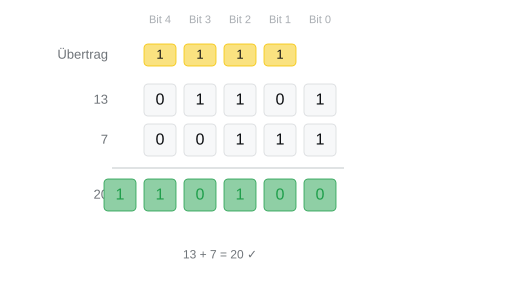
Binäre Multiplikation
Wenn wir Menschen im Kopf multiplizieren, zerlegen wir größere Multiplikationen meist in kleinere Teilaufgaben. Zum Beispiel rechnen wir bei \(14 * 12\) die Zerlegung \(10 * 12 = 120\), \(4 * 10 = 40\) und \(4 * 2 = 8\) und addieren anschließend \(120 + 40 + 8 = 168\).
Der Computer multipliziert nach einer ähnlichen Idee, verwendet aber die Zerlegung in Zweierpotenzen. Diese kann er direkt aus der Binärdarstellung ablesen. Die Binärdarstellung von 5 ist \(101\), also \(2^2 + 2^0\). Somit kann man \(5*3\) zerlegen in \(4*3 + 1*3\).
Genauso wie wir bei \(10 * 12 = 120\) die Multiplikation mit 10 nicht ausrechnen, sondern einfach eine 0 anhängen, kann der Computer Multiplikationen mit Zweierpotenzen durch Verschieben der Bits durchführen (also 0 anhängen). Für \(4 * 3 = 2^2 * 3\) muss er die Binärdarstellung von 3, also \(011\), lediglich zwei Stellen nach links verschieben und erhält \(01100\).
Der große Vorteil der Binärdarstellung ist, dass jede Stelle nur 0 oder 1 sein kann. Während wir Menschen die Ergebnisse von \(0 * 0\) bis \(9 * 9\) auswendig lernen, braucht der Computer bei dieser Zerlegung nur die Fälle \(0\) und \(1\) berücksichtigen, wobei alle möglichen Multiplikationen sich direkt ergeben: \[ 0 * 0 = 0; 0 * 1 = 0; 1 * 0 = 0; 1 * 1 = 1 \]
Das Ergebnis entspricht damit genau der Wahrheitstabelle eines logischen UND. Die Multiplikation von Binärzahlen kann daher durch UND-Gatter zur Berechnung der Teilprodukte und anschließende Additionen realisiert werden.
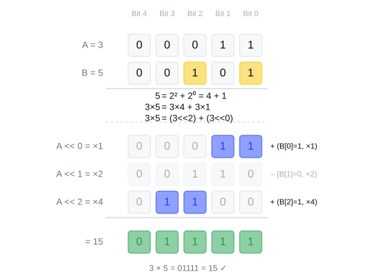
Darstellung von reellen Zahlen im Binärsystem
Reelle Zahlen können im Computer nicht exakt dargestellt werden, da sie oft viele und bis zu unendlich viele Nachkommastellen besitzen können (z. B. \(1/3\), \(\pi\)). Stattdessen verwendet der Computer eine angenäherte Darstellung, die sogenannte Gleitkommazahl (engl. floating point number). Diese basiert auf einer Exponentialschreibweise, ähnlich wie in der Mathematik:
\[ \pm\ m \times 10^e \]
wobei \(m\) die Mantisse, \(e\) der Exponent und das Vorzeichen \(\pm\) ist. Im Computer wird jedoch das Binärsystem verwendet, daher lautet die Darstellung:
\[ \pm\ m \times 2^e \]
Hierbei ist \(m\) die Binärmantisse (zwischen 1 und 2), \(e\) der Binärexponent.
Beispiel: Wir möchten die Zahl \(-13,25\) als Gleitkommazahl im Format \(\pm m \times 2^e\) darstellen:
- Vorzeichen: Die Zahl ist negativ, also \(1\).
- Dezimalzahl in Binärform: \(13,25_{10} = 1101,01_2\)
- Exponentialverschiebung: \(1101,01_2 = 1,10101_2 \times 2^3\)
- Zerlegung in Mantisse: \(1,10101_2\) und Exponent: \(3\)
- Ergebnis: \(-13,25 = -1,10101_2 \times 2^3\)
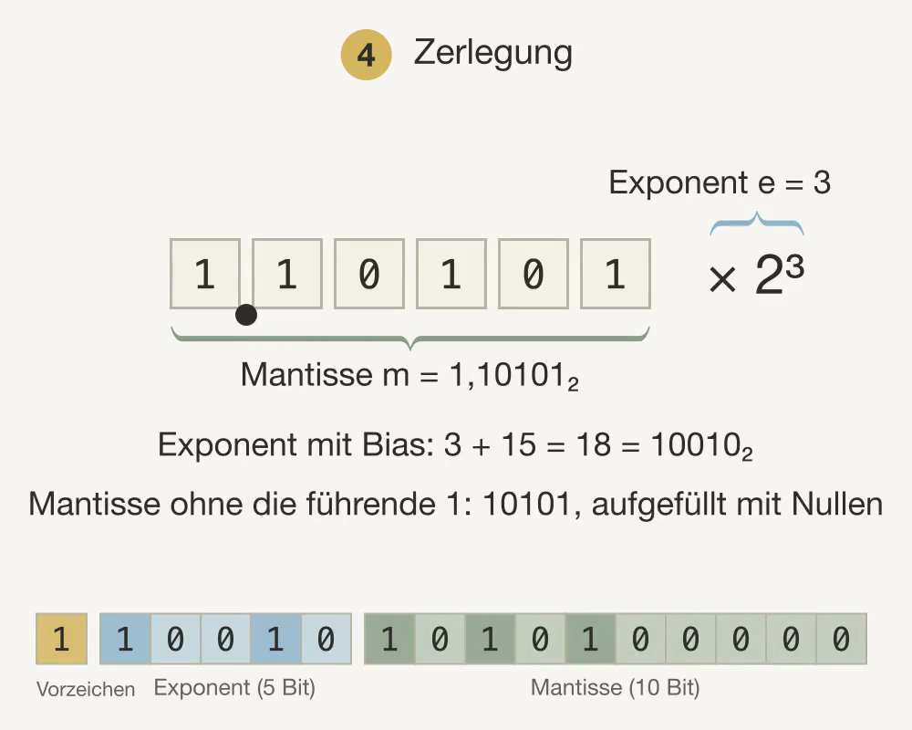
In der Praxis werden die Zahlen im standardisierten IEEE-754-Format gespeichert. Der Standard legt fest, wie viele Bits für Vorzeichen, Exponent und Mantisse zur Verfügung stehen. Üblich sind 16 Bit (half), 32 Bit (float) und 64 Bit (double, das Format der Python-Gleitkommazahlen). Dabei wird der Exponent mit einem festen Bias gespeichert (15, 127 bzw. 1023), damit auch negative Exponenten ohne eigenes Vorzeichen darstellbar sind. Die Mantisse wird ohne die führende 1 abgelegt und mit Nullen aufgefüllt. Für \(-13{,}25\) ergibt sich:
| Format | Vorzeichen | Exponent | Mantisse | Bias | \(-13{,}25\) im Speicher |
|---|---|---|---|---|---|
| 16 Bit | 1 Bit | 5 Bit | 10 Bit | 15 | 1 10010 1010100000 |
| 32 Bit | 1 Bit | 8 Bit | 23 Bit | 127 | 1 10000010 10101000000000000000000 |
| 64 Bit | 1 Bit | 11 Bit | 52 Bit | 1023 | 1 10000000010 1010100…0 (47 Nullen am Ende) |
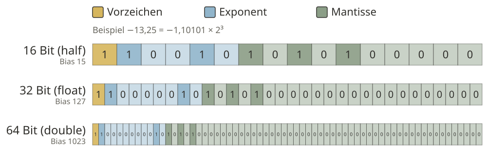
So werden beliebige reelle Zahlen im Computer als Gleitkommazahlen nach IEEE 754 gespeichert.
Begrenzte Anzahl an Bits können nicht alle reellen Zahlen exakt dargestellt werden. Es kommt zu Rundungsfehlern und einer endlichen Genauigkeit.
Abbildung von Zeichen im Computer
Text wird im Computer als Folge von Zahlen gespeichert, die wiederum binär codiert sind. Jeder Buchstabe, jedes Satzzeichen und jedes andere Zeichen wird durch eine bestimmte Zahl dargestellt. Diese Zuordnung ist in sogenannten Zeichencodierungen wie ASCII oder Unicode festgelegt.
| Kleinbuchstabe | Dezimal | Binär | Großbuchstabe | Dezimal | Binär | Zahlen/Sonderz. | Dezimal | Binär |
|---|---|---|---|---|---|---|---|---|
| a | 97 | 01100001 | A | 65 | 01000001 | 0 | 48 | 00110000 |
| b | 98 | 01100010 | B | 66 | 01000010 | 1 | 49 | 00110001 |
| c | 99 | 01100011 | C | 67 | 01000011 | 2 | 50 | 00110010 |
| d | 100 | 01100100 | D | 68 | 01000100 | 3 | 51 | 00110011 |
| e | 101 | 01100101 | E | 69 | 01000101 | 4 | 52 | 00110100 |
| f | 102 | 01100110 | F | 70 | 01000110 | 5 | 53 | 00110101 |
| g | 103 | 01100111 | G | 71 | 01000111 | 6 | 54 | 00110110 |
| h | 104 | 01101000 | H | 72 | 01001000 | 7 | 55 | 00110111 |
| i | 105 | 01101001 | I | 73 | 01001001 | 8 | 56 | 00111000 |
| j | 106 | 01101010 | J | 74 | 01001010 | 9 | 57 | 00111001 |
| k | 107 | 01101011 | K | 75 | 01001011 | ! | 33 | 00100001 |
| l | 108 | 01101100 | L | 76 | 01001100 | ? | 63 | 00111111 |
| m | 109 | 01101101 | M | 77 | 01001101 | . | 46 | 00101110 |
| n | 110 | 01101110 | N | 78 | 01001110 | , | 44 | 00101100 |
| o | 111 | 01101111 | O | 79 | 01001111 | (Leerstelle) | 32 | 00100000 |
Moderne Computer verwenden oft Unicode (z. B. UTF-8), um auch Zeichen aus anderen Sprachen und Sonderzeichen darstellen zu können. Auch hier werden die Zeichen in Zahlen übersetzt und dann binär gespeichert. So zieht sich die binäre Codierung von Zeichen durch alle Ebenen der Computertechnik, vom Speichern im RAM bis zur Darstellung in der GPU zur Anzeige auf dem Bildschirm.
Abbildung von Bildern im Computer
Bilder werden im Computer als eine Sammlung von kleinen Bildpunkten, sogenannten Pixeln, gespeichert. Jedes Pixel stellt einen winzigen Teil des Bildes dar und besitzt eine bestimmte Farbe. Um ein Bild digital zu speichern, wird das Bild zunächst in ein Raster aus Pixeln mit einer bestimmten Auflösung (z. B. 1920 × 1080 Pixel) unterteilt.
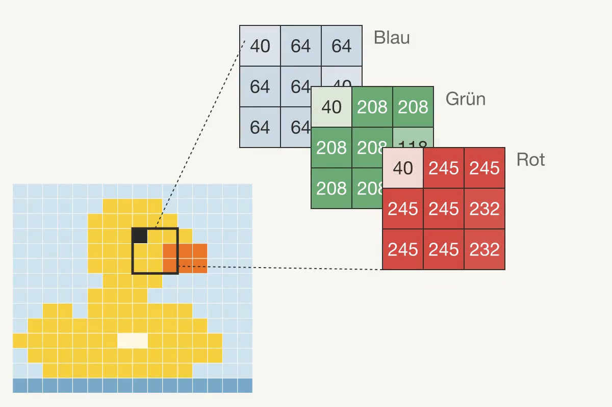
Die Farbe jedes Pixels wird durch Zahlenwerte beschrieben. Bei Farbbildern wird häufig das RGB-Farbmodell verwendet, bei dem jede Farbe aus den drei Grundfarben Rot, Grün und Blau zusammengesetzt wird. Für jede dieser Farben wird ein Zahlenwert gespeichert, meist im Bereich von 0 bis 255 (das entspricht 1 Byte pro Farbkanal). Ein einzelnes Pixel benötigt somit 3 Byte (24 Bit), um alle Farbinformationen zu speichern.
Beispiel: Ein Pixel mit den Werten Rot = 120, Grün = 200, Blau = 150 wird im Computer als drei Zahlen gespeichert. Diese Zahlen werden wiederum in Binärzahlen umgewandelt, z. B.
- 120 (Rot) → 01111000
- 200 (Grün) → 11001000
- 150 (Blau) → 10010110
Alle Pixel eines Bildes werden so als lange Folge von Binärzahlen im Speicher abgelegt. Dadurch kann der Computer das Bild rekonstruieren, anzeigen oder weiterverarbeiten.
Von Python-Code zu Maschinenbefehlen
Python-Code wird nicht direkt von der CPU ausgeführt. Der Python-Interpreter übersetzt den Quellcode zunächst in Bytecode (sichtbar mit dis.dis) und führt diesen dann schrittweise aus. Der Interpreter ist selbst ein Programm aus Maschinenbefehlen. Dabei entstehen aus einer einzigen Python-Zeile viele einzelne Maschinenbefehle. Die Auflistung zeigt sie vereinfacht für z = x + y:
LOAD R1, [Adresse von x]
LOAD R2, [Adresse von y]
ADD R3, R1, R2
STORE [Adresse von z], R3Die CPU speichert jeden dieser Befehle als Binärzahl. In unserem vereinfachten Beispiel hat ein Befehl 24 Bit: 4 Bit für den Opcode (LOAD = 0001, STORE = 0010, ADD = 0011), 4 Bit für das Register und 16 Bit für die Speicheradresse. Mit den Adressen aus der Abbildung (x in 0x0A10, y in 0x0A11, z in 0x0A12) ergibt sich:
0001 0001 0000 1010 0001 0000 LOAD R1, [x]
0001 0010 0000 1010 0001 0001 LOAD R2, [y]
0011 0011 0001 0010 0000 0000 ADD R3, R1, R2
0010 0011 0000 1010 0001 0010 STORE [z], R3Bei ADD stehen statt der Adresse zwei weitere Registernummern und der Rest bleibt 0. Dieses Format ist ein Lehrbeispiel; echte Prozessoren verwenden andere Formate, das Prinzip bleibt gleich.
Die CPU sieht am Ende nur Speicheradressen und Binärwerte — keine Variablennamen, keine Python-Syntax. Variablennamen sind für den Menschen; die Hardware arbeitet ausschließlich mit Adressen.
Der Instruction Pointer führt Befehl für Befehl aus
Die CPU führt Befehle sequenziell aus: Befehl für Befehl, Adresse für Adresse. Ein spezielles Register, der Instruction Pointer (IP, auch Program Counter genannt), speichert die Adresse des nächsten auszuführenden Befehls. Nach jeder Instruktion erhöht sich der IP automatisch — so entsteht sequenzielle Ausführung als Grundverhalten des Prozessors.
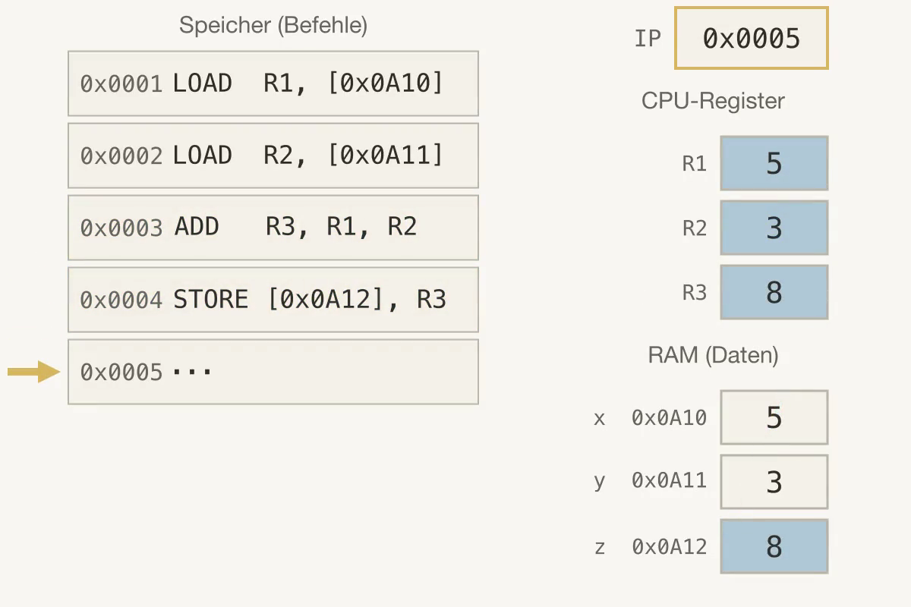
z = x + yDas Beispiel zeigt den Zustand, wenn der IP bei 0x0003 steht: Die ersten beiden Befehle sind ausgeführt.
| IP | Adresse | Befehl |
|---|---|---|
| 0x0001 | LOAD R1, [0x0A10] |
|
| 0x0002 | LOAD R2, [0x0A11] |
|
| → | 0x0003 | ADD R3, R1, R2 |
| 0x0004 | STORE [0x0A12], R3 |
|
| 0x0005 | … |
Sprungbefehle (z.B. bei Schleifen und Funktionsaufrufen) ändern den IP auf eine andere Adresse. Ohne solche Sprünge läuft ein Programm Zeile für Zeile durch den Speicher.
Register sind die kleinsten und schnellsten Speichereinheiten der CPU. Sie halten die Werte, mit denen gerade gerechnet wird — wie ein Notizblock direkt auf dem Schreibtisch. Jede Variable im Programm landet irgendwann in einem Register, bevor die CPU mit ihr rechnen kann.
Speicherzellen und Register
Der RAM lässt sich als eine lange Reihe von Zellen vorstellen. Jede Zelle hat eine numerische Adresse und enthält einen Binärwert. Eine Variable ist nichts anderes als eine solche benannte Zelle: Wenn Python x = 5 ausführt, reserviert der Interpreter irgendwo im RAM eine Zelle und schreibt den Binärwert für 5 hinein.
Register sind noch schneller: Sie sitzen direkt in der CPU und halten die Werte für die laufende Berechnung. Bevor die CPU zwei Zahlen addiert, lädt sie beide Werte aus dem RAM in Register, führt die Addition durch und schreibt das Ergebnis zurück. Die Abbildung zeigt den Zustand mitten in z = x + y: Der Instruction Pointer steht bei ADD, R1 und R2 enthalten bereits die Werte von x und y, und die Zelle von z ist noch leer.
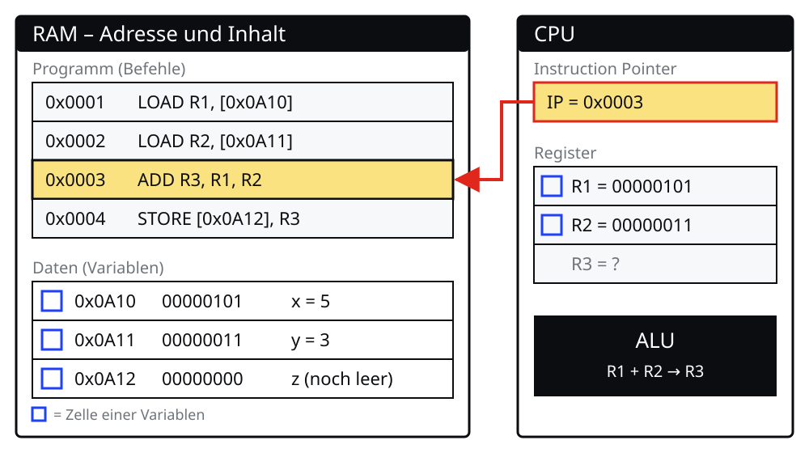
Der Bus transportiert Programme und Daten zwischen den Modulen
Die Module eines Computers arbeiten nicht isoliert: Alles, was sie austauschen, läuft über den Kommunikationsbus auf dem Mainboard. Die Abbildung zeigt das am Programm z = x + y. Zuerst wird das Programm von der Festplatte oder SSD in den RAM geladen, weil die CPU nur auf den schnellen Arbeitsspeicher zugreift. Dann arbeitet die CPU die Befehle nacheinander ab: Der Instruction Pointer zeigt auf den nächsten Befehl, der Befehl wandert über den Bus vom RAM in die CPU, und LOAD kopiert die Werte von x und y in die Register R1 und R2. Die ALU addiert die beiden Register, ohne den RAM zu benutzen, und das Ergebnis landet in R3. STORE schreibt es schließlich über den Bus in die Speicherzelle von z. Die Abbildung ist vereinfacht: Auf einem echten Mainboard gibt es mehrere Verbindungen, die parallel arbeiten.
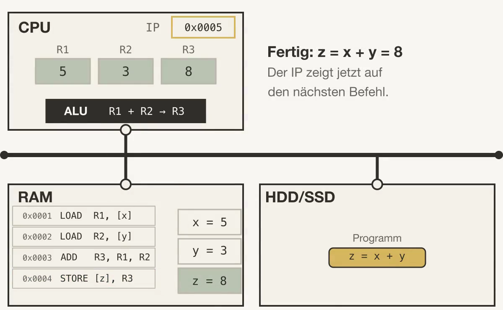
Wie Python die Werte von Variablen in diesen Speicherzellen ablegt, behandeln wir in 02c_Speicher.
Datenwachstum
Die Menge der weltweit erzeugten, erfassten und verarbeiteten Daten wächst exponentiell. Laut der IDC Global DataSphere Prognose wird das globale Datenvolumen von rund 100 Zettabyte (ZB) im Jahr 2023 auf über 180 ZB bis 2025 ansteigen. Treiber dieses Wachstums sind IoT-Sensoren, soziale Medien, Video-Streaming, Unternehmensdaten und wissenschaftliche Instrumente.
Für Menschen ist es schon heute unmöglich, diese Datenmassen manuell zu sichten oder auszuwerten. Hier kommt die Informatik ins Spiel: Durch Programmierung lassen sich Auswertungen automatisieren, Muster erkennen und Entscheidungen datengestützt treffen. Grundlegende Programmierkenntnisse sind daher keine rein technische Kompetenz, sondern eine Schlüsselqualifikation für nahezu alle wissenschaftlichen und beruflichen Felder.
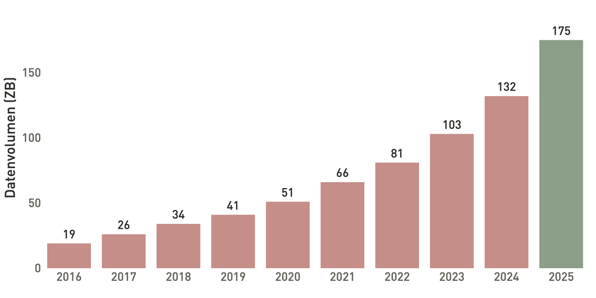